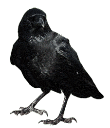
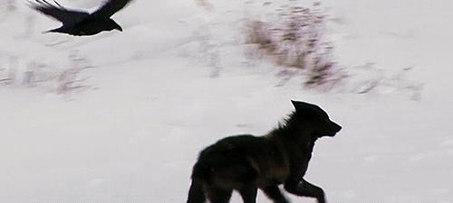

Los cuervos son un genero de aves peseriformes grandes, de la familia Corvidae. Se atribuyen al género especies de tamaño medio-grande, que van desde los 34 cm de algunas pequeñas especies mexicanas hasta los 70 cm de los grandes cuervos comunes y cuervo de pico grueso.
Se han registrado innumerables imagenes de corvidos jugando. Muchos conductistas consideran que el juego es una cualidad esencial en los animalesa inteligentes. Los cuervos tienen una mutualidad con ciertos, en especial con los lobeznos. Esto se debe a su mutualismo ya que el cuervo al ser un animal alado se le hace mas facil buscar y ubicar ciertas presas, presas que ubica, señala y advierte a su aliado canino, el cual se encarga de darles caza y asi compartir la comida con el ave.
Se ha demostrado que los cuervos son animales sumamente astutos, siendo considerados como uno de lo animales mas inteligentes del mundo. Esto se demuestra de diversas maneras, por ejempl0o, se han avistado a estas aves llevando nueces a la autopista para que los automóviles la pisen y destruyan su cascara, ya que los cuervos son incapaces de romperla por si mismos. Hay una subespecie que destaca sobre todas en este apartado; los cuervos de Nueva Caledonia. Estos son capaces de usar herramientas hechos por ellos mismos, alcanzando insectos que no podrían comer con su pico, algunos hasta han resuelto "puzzles" (rompecabezas) que hubieran sido imposibles para la mayoría de animales.